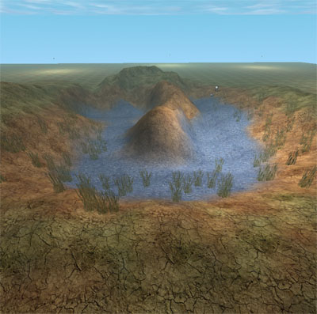
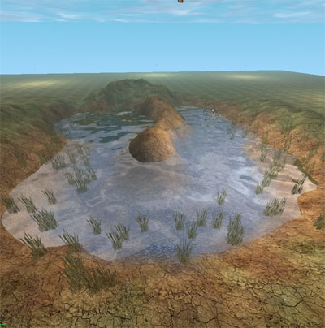
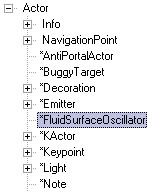
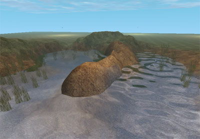

UDN
Search public documentation:
FluidSurfaceTutorialJP
English Translation
한국어
Interested in the Unreal Engine?
Visit the Unreal Technology site.
Looking for jobs and company info?
Check out the Epic games site.
Questions about support via UDN?
Contact the UDN Staff
한국어
Interested in the Unreal Engine?
Visit the Unreal Technology site.
Looking for jobs and company info?
Check out the Epic games site.
Questions about support via UDN?
Contact the UDN Staff
フルイド サーフェス テュートリアル
本書の概要: フルイド サーフェス情報を設定するためのガイドとリファレンス 本書の変更記録: James Goldingにより最終編集概要
ビルド927には、シンプルなフルイド サーフェス グリッドのシミュレータ効果があります。ここでは、その使用方法を簡単に説明します｡はじめに
まず、フルイドを入れておくホールを作ります｡フルイド サーフェス情報は常にワールドXとYに沿って矩形を作ります（これらは回転できません）。現在、フルイド サーフェス情報にLODはないため、これが適するのは小さなプールなどのみです。空のプールはこのようなものです：
FluidSurfaceInfoの作成
アクタのブラウザで、[Info]（情報）の下のFluidSurfaceInfo（フルイド サーフェス情報）クラスを探します： このクラスを選択し、空のプールを右クリックし、[Add FluidSurfaceInfo Here]（ここにフルイド サーフェス情報を追加）を選びます｡これにより、フルイド サーフェスがデフォルトの設定で作成されます｡これは32x32の六角形のメッシュ グリッドで、グリッドの間隔は32Unreal ユニットです。フルイド サーフェス アクタ上をダブルクリックし、プロパティを表示します｡以下がデフォルトです：
このクラスを選択し、空のプールを右クリックし、[Add FluidSurfaceInfo Here]（ここにフルイド サーフェス情報を追加）を選びます｡これにより、フルイド サーフェスがデフォルトの設定で作成されます｡これは32x32の六角形のメッシュ グリッドで、グリッドの間隔は32Unreal ユニットです。フルイド サーフェス アクタ上をダブルクリックし、プロパティを表示します｡以下がデフォルトです：

フルイド サーフェスの構築
オプションの概要を説明します｡いくつかは詳細が後に記載されています| AlphaCurveScale | 頂点でのフルイドの湾曲と、その頂点で結果的に生じるアルファのと間の比 |
| AlphaHeightScale | 頂点でのフルイドの高さと、その頂点で結果的に生じるアルファとの間の比｡湾曲により、アルファとの合計 |
| AlphaMax | フルイド頂点の最大アルファ |
| bShowBoundingBox | 水の境界ボックスを表示 |
| ClampTerrain | フルイドの頂点を固定する際にチェックするテレイン |
| FluidDamping | ウェーブが消え去る速度｡｢0｣から｢1｣の間に保持 |
| FluidGridSpacing | フルイド頂点間の距離｡頂点の数を変えないままサーフェスのサイズを変更 |
| FluidGridType | FGT_Hexagonal or FGT_Square。六角形の見栄えは良くなるが、少々遅くなる |
| FluidHeightScale | ウェーブの高さの、最終的なスケーリング ファクタ |
| FluidNoiseFrequency | サウンドごとに作られるランダムプレイス ノイズ プリング｡｢50｣くらいで使用 |
| FluidNoiseStrength | ノイズ プリングの強さの配置 |
| FluidSpeed | 水上を移動する波の速度｡フルイドをより滑らかにするためには、値を下げる |
| FluidXSize | X方向の頂点の数｡パワーは｢2｣が適当。｢256｣より上げない |
| FluidYSize | Y方向の頂点の数｡パワーは｢2｣が適当。｢257｣より上げない |
| OrientShootEffect | ShootEffect（発射効果）をスポーンする際、発射方向の起点となる |
| OrientTouchEffect | TouchEffect（タッチ効果）をスポーンする際、タッチ アクタ速度の起点となる |
| RippleVelocityFactor | アクタが水上を移動する速度と、さざ波の強さとの間の比 |
| ShootEffect | フルイド サーフェスが撃たれた場合のスポーンの効果 |
| ShootStrength | 水が撃たれた場合のプリングの強さ |
| TestRipple | プールの周り移動するさざ波を立て（エディタ内のみ）、水の状態を確認 |
| TestRippleRadius | テスト版のさざ波の半径 |
| TestRippleSpeed | サーフェスの周りを移動するテスト版さざ波の速度 |
| TestRippleStrength | テスト版のさざ波の強さ |
| TouchEffect | フルイド サーフェスが別のアクタにタッチされた場合の、スポーンの効果 |
| TouchStrength | アクタが初めて水をタッチした場合に生成される、プリングの強さ |
| UOffset | X方向のオフセットをコーディネイトするテクスチャ |
| UpdateRate | フルイド サーフェス シミュレーションが更新されるレート |
| UTiles | X方向にテクスチャを繰り返す回数 |
| VOffset | Y方向にオフセットをコーディネイトするテクスチャ |
| VTiles | Y方向にテクスチャを繰り返す回数 |
| WarmUpTime | ノイズなどをビルドするために、水を開始時に走らせる回数（秒単位）。通常2秒ほど |

FluidSurfaceOscillator (フルイド サーフェス オシレーター)
さざ波をサーフェスのの全面に作る代わりに、特定の場所にだけ作ることができます｡これにはFluidSurfaceOscillatorアクタを使います｡アクタ クラス ブラウザ内で、"Actor"（アクタ）の下にあります：
FluidSurfaceOscillatorのプロパティは以下のとおりです：
| FluidInfo | 波を追加するためのフルイド サーフェス情報 |
| Frequency | オシレーターの度数（秒に対して回転を単位とする） |
| Phase | 異なるオシレーターのフェーズをオフセット |
| Radius | 影響するフルイドの半径 |
| Strength | 波の大きさ |

頂点のクランピング
上の絵から分かるとおり、オシレーターからの波が突起したテレインの一部を通過しています｡これは余りリアルではありません｡波はまた、プールの実際の境界線にバウンスしません｡これを直すには、FluidSurfaceInfoにあるClampTerrain（テレインのクランプ）プロパティを使います｡フルイド サーフェスのプロパティに行き、[ClampTerrain]、[Find]（探す）の順にクリックし、続いてフルイドの周囲のテレインをクリックします｡次に[Rebuild All]（すべてをリビルド）の操作をし、水がクランプしている状態に更新します｡ フルイド サーフェスは、指定したテレインまたはブロッキング ボリュームの下側にあるすべての頂点にゼロでクランプします｡これにより波はそれらの頂点を通過せず、代わりにはね返ります｡ この操作をすると、プールは以下のように見えます：
波は、突起した地面を通過していません｡フルイドのサイズはロケーションなどを変更した際は、クランプ情報をリビルドする必要があります｡サーフェス アルファ
各サーフェス頂点に対し生成されるアルファ値は以下のとおりです： VertexAlpha = MIN(AlphaMax, (Curvature * AlphaCurveScale) + (Height * AlphaHeightScale)) アルファを使うと、例えば波が一番多い箇所に、泡立ったテクスチャを与えることができます｡フルイド サーフェスのホール
特定の半透明マスクを持つマテリアルを使うと、矩形のフルイド サーフェスにホールを簡単に作成できます｡このマスクは、プールの端で水をフェード アウトさせるためにも使えます｡この例は、UT2003 マップ DM-Antalus で見ることができます｡フルイド サーフェスとのインタラクション
他のアクタ同士が、フルイド内のゲームでインタラクトする方法は二つあります：- Shooting. デフォルトで、さざ波はショットが当たった場所で指定されているShootStrength（ショット力）に応じてスポーンされます｡ここで指定されたクラスの効果も、スポーンされます。
- Touching. アクタが水をタッチするとさざ波が起こるようにするには、このアクタのbDisturbFluidSurfaceフラグが正に設定されている必要があります｡はじめのさざ波は、アクタがはじめに水をタッチした地点で作成されます（TouchStrength/Effect (タッチ力/効果)。ShootStrength/Effect (ショット力/効果)で指定された方法と同じ）。さざ波はアクタが水中を移動する速さに応じて生成されます｡アクタの水平方向の速度とさざ波の強さの間の比率は、RippleVelocityFactor（さざ波の速度ファクタ）によって調整します｡さざ波の半径は、アクタのコリジョン半径から計算されます｡